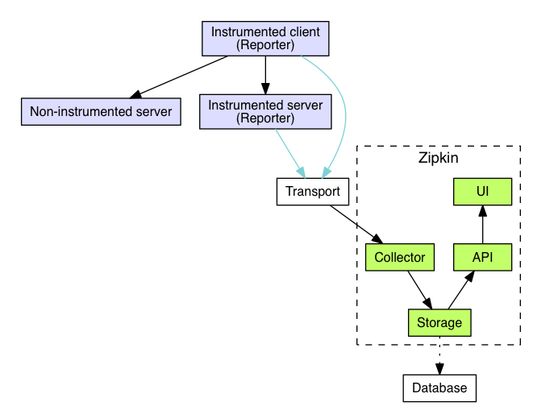

Introduction to Distributed Tracing
Nikolay Novik
KyivPy 22
I am ...
- Software Engineer: at DataRobot Ukraine
- Github: https://github.com/jettify
- Twitter: https://twitter.com/isinf
- aio-libs: https://github.com/aio-libs
- My Projects:
- database clients:
aiomysql, aioobc - web and etc:
aiomonitor, aiohttp-debugtoolbar, aiobotocore, aiohttp-mako, aiohttp-admin, aiorwlock, aiozipkin
- database clients:
How many of you heard of distributed tracing?
- I read Dapper paper.
- I heard about this and know key ideas.
- I think distributed tracing is kinda cool.
Problem statement

- User response are slow where is bottle neck?
- Standard tools are broken, cprofile is not helping
- How many services participate in serving this http route?
- What is going on in this madness in first place?
Tools we have: Metrics

- Aggregates events per service
- Insights about trends and alerts
- No per request overview
Tools we have: Logs

- Records discrete events
- Manual correlation
- Usually expensive
What is Distributed Tracing?
Distributed Tracing - is a tool that helps gather timing data needed to troubleshoot latency problems in service oriented architectures. Provides an end-to-end view of requests as they travel through your application, and shows a map of your application’s underlying components.
Popularity started from Google Dapper paper (2010) and microservices hype

Google Dapper Tracing Tool Goals
- Low overhead
- Application transparency
- Scalability
Google Dapper: Low overhead
- Employ sampling to for low overhead
- Sample of just one out of thousands, provides sufficient information for many common use cases
- Low network overhead, context is tiny
Google Dapper: Scalability

- Data written in local log files
- Collectors pulls data from all production hosts
- Results are stored in regional BigTable
Google Dapper: Application transparency
- Tracing mostly transparent for developer
- Instrumented RPC library used by all services
- Trace context sits in thread local storage, so instrumentation can pick it when required
Zipkin strait forward implementation of Dapper ideas

- Opensourced by Twitter Inc.
- https://github.com/openzipkin/zipkin
- https://twitter.com/zipkinproject
Firefighter tools
Zipkin is not substitution for metrics and logging. http://thelastpickle.com/blog/2015/12/07/using-zipkin-for-full-stack-tracing-including-cassandra.htmlZipkin in the wild

Other tools for Distributed tracing

Why not OpenTracing
- Lockin to one instrumentation vendor
- Wire and data interop is out-of-scope
- Monkey patching everywhere
- Things are not settled, big player still negotiate tracing cooperation between vendors
Zipkin Architecture

- Client and server sends spans separately
- Span correlation happens on zipkin server
Zipkin Glossary

- Span represents one specific method (RPC) call
- Annotation string data associated with a particular timestamp in span
- Binary Annotation - key and value associated with given span
- Trace - collection of spans, related to serving particular request
Identifying Services interacting with request
Identifying duplicate calls

Identifying Slow requests

Identifying serial execution
Service dependency analysis

Zipkin python story
| Name | github | stars |
|---|---|---|
| py_zipkin | github.com/Yelp/py_zipkin | 61 ★ |
| pyramid_zipkin | github.com/Yelp/pyramid_zipkin | 23 ★ |
| flask-zipkin | github.com/qiajigou/flask-zipkin | 14 ★ |
| django-zipkin | github.com/prezi/django-zipkin | 19 ★ |
| aiozipkin | github.com/aio-libs/aiozipkin | 10 ★ |
Zipkin for asyncio: aiozipkin
import aiozipkin as az
async def run():
zipkin_address = "http://127.0.0.1:9411"
endpoint = az.create_endpoint("simple_service", ipv4="127.0.0.1", port=8080)
tracer = az.create(zipkin_address, endpoint)
# create and setup new trace
with tracer.new_trace(sampled=True) as span:
# give a name for the span
span.name("Slow SQL")
# tag with relevant information
span.tag("span_type", "root")
# indicate that this is client span
span.kind(az.CLIENT)
# make timestamp and name it with START SQL query
span.annotate("START SQL SELECT * FROM")
# imitate long SQL query
await asyncio.sleep(0.1)
# make other timestamp and name it "END SQL"
span.annotate("END SQL")
aiozipkin features
- Does not rely on thread local implicitly
- Modeled after Brave zipkin java client
- Uses Zipkin V2 API
- There is aiohttp server instrumentation for aiohttp
- Will be production ready very soon
aiozipkin application transparency
- Developers are lazy, for better experience libraries should be instrumented
- Other vendors like datadog, newrelic et, will benefit too (right now they monkey patch everything)
- asyncio right now does not support contest variables like thread locals, PEP 550 addresses this issue
- aiohttp HTTP client instrumentation in progress
References
- Sigelman, B. H., Barroso, L. A., Burrows, M., Stephenson, P., Plakal, M., Beaver, D., Jaspan, S., and Shanbhag, C. Dapper, a Large-Scale Distributed Systems Tracing Infrastructure. Technical Report, Google, 2010.
- Mace, J. End-to-End Tracing: Adoption and Use Cases. Survey, Brown University, 2017.
Thank you!

aio-libs: https://github.com/aio-libs